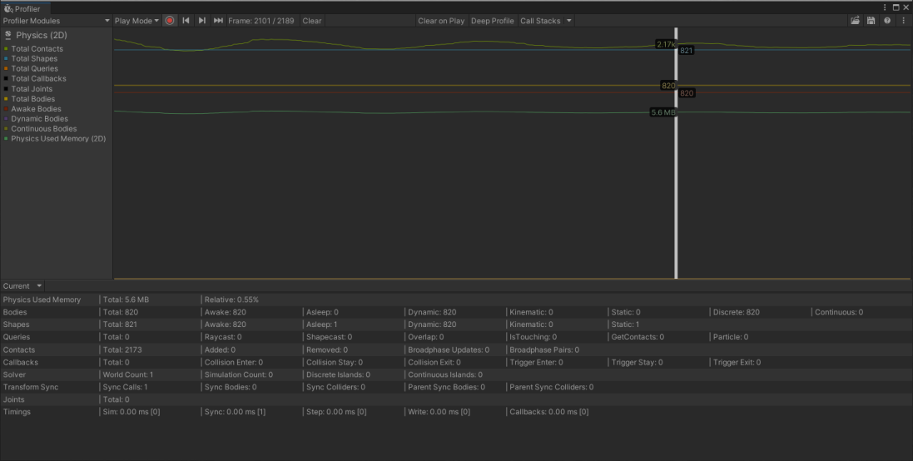

The Physics 2D Profiler module displays information about the physics that the physics system has processed in your project’s scene. This information can help you diagnose and resolve performance issues or unexpected discrepancies related to the physics in your project’s scene.

The Physics 2D Profiler module in the Profiler window
The Physics 2D Profiler module’s chart tracks different statistics related to the physics that the physics system processes in the project’s scene, divided into the following chart categories. Click on the frame chart window or select a captured frame in the chart graph to track selected categories. To change the order of the categories in the chart, drag and drop them in the chart’s legend. You can also click a category’s colored legend to toggle its display. Refer to the module details pane for more information about the selected statistics.
| Chart | 描述 |
|---|---|
| Total Contacts | The total number of contacts that were present in this frame. This includes both Collision and Trigger contacts. Processing and solving contacts can be time consuming therefore they should be kept to a minimum. |
| Total Shapes | The total number of physics shapes that were present in this frame. Different Collider2D produce different amounts of physics shapes ranging from one to unlimited. You can get the shape count and retrieve the physics shapes to determine this for any Collider2D. |
| Total Queries | The total number of queries that were called this frame. This includes queries such as Physics2D.Raycast, Physics2D.OverlapPoint etc. |
| Total Callbacks | The total number of OnCollisionEnter2D, OnCollisionStay2D, OnCollisionExit2D, OnTriggerEnter2D, OnTriggerStay2D and OnTriggerExit2D callbacks that were called in this frame. |
| Total Joints | The total number of any Joint2D that were present in this frame. |
| Total Bodies | The total number of Rigidbody2D that were present in this frame. |
| Awake Bodies | The total number of Rigidbody2D that were both awake (not sleeping) and were present in this frame. |
| Dynamic Bodies | The total number of Rigidbody2D with a Dynamic body type that were present in this frame. Dynamic bodies take the most processing of all body types therefore they should be kept to a minimum. |
| Continuous Bodies | The total number of Rigidbody2D with a Continuous collision detection mode that were present in this frame. Continuous bodies are much more expensive than when using Discrete collision detection mode therefore they should be kept to a minimum. |
| Physics Used Memory | The total amount of persistent memory used exclusively by the 2D physics system. This includes both the core engine and the memory used by each physics component, but does not include the temporary memory used in this frame. |
When you select a frame in the Physics 2D Profiler module, the details pane displays detailed information about the physics in your project’s scene. The details pane is sorted by category, where each category exists on a single line.
The following reference table describes the statistics available, plus its corresponding profiler counter, and availability in Release builds. The profiler counters are always available in the Editor and Development builds. This information is also available via the ProfilerRecorder API and in the Profiler Module Editor so you can add them to a custom Profiler module.
| Statistic | 描述 | Corresponding Profiler Counter (exact name) | Available in Release Players? |
|---|---|---|---|
| Total | The total amount of persistent memory used exclusively by the 2D physics system. This includes both the core engine and the memory used by each physics component, but does not include temporary memory used in this frame. | Physics Used Memory 2D | 否 |
| Relative | The relative percentage of memory used by the 2D physics system compared to the overall memory usage of Unity. | 无 | 无 |
| Statistic | 描述 | Corresponding Profiler Counter (exact name) | Available in Release Players? |
|---|---|---|---|
| Total | The total number of Rigidbody2D that were present in this frame. | Total Bodies | 否 |
| Awake | The number of Rigidbody2D that were both awake (not sleeping) and were present in this frame. Note that a Rigidbody2D with a Static body type is always asleep. | Awake Bodies | 否 |
| Asleep | The number of Rigidbody2D that were both sleeping (not awake) and were present in this frame. Note that a Rigidbody2D with a Static body type is always asleep. | Asleep Bodies | 否 |
| Dynamic | The number of Rigidbody2D with a Dynamic body type that were present in this frame. Dynamic bodies take the most processing of all body types therefore they should be kept to a minimum. | Dynamic Bodies | 否 |
| Kinematic | The number of Rigidbody2D with a Kinematic body type that were present in this frame. Kinematic bodies have minimal processing therefore they should be used when explicit movement is required but reaction to external forces is not. | Kinematic Bodies | 否 |
| Static | The number of Rigidbody2D with a Static body type that were present in this frame. Static bodies take the least processing of all body types therefore they should be used when possible where no movement is required. | Static Bodies | 否 |
| Discrete | The number of Rigidbody2D with a Discrete collision detection mode that were present in this frame. Discrete bodies are far less expensive than when using Continuous collision detection mode therefore they should be used where possible. | Discrete Bodies | 否 |
| Continuous | The number of Rigidbody2D with a Continuous collision detection mode that were present in this frame. Continuous bodies are much more expensive than when using Discrete collision detection mode therefore they should be kept to a minimum. | Continuous Bodies | 否 |
| Statistic | 描述 | Corresponding Profiler Counter (exact name) | Available in Release Players? |
|---|---|---|---|
| Total | The total number of physics shapes that were present in this frame.. Different Collider2D produce different amounts of physics shapes ranging from one to unlimited. You can get the shape count and retrieve the physics shapes to determine this for any Collider2D. | Total Shapes | 否 |
| Awake | A physics shape is awake if it is attached to a Rigidbody2D that is awake. This is the number of physics shapes that were both awake (not sleeping) and were present in this frame. | Awake Shapes | 否 |
| Asleep | A physics shape is asleep if it is attached to a Rigidbody2D that is asleep. This is the number of physics shapes that were both sleeping (not awake) and were present in this frame. | Asleep Shapes | 否 |
| Dynamic | A physics shape is Dynamic if it is attached to a Rigidbody2D with a Dynamic body type. This is the number of physics shapes that were both Dynamic and were present in this frame. | Dynamic Shapes | 否 |
| Kinematic | A physics shape is Dynamic if it is attached to a Rigidbody2D with a Kinematic body type. This is the number of physics shapes that were both Kinematic and were present in this frame. | Kinematic Shapes | 否 |
| Static | A physics shape is Dynamic if it is attached to a Rigidbody2D with a Static body type. This is the number of physics shapes that were both Static and were present in this frame. | Static Shapes | 否 |
| Statistic | 描述 | Corresponding Profiler Counter (exact name) | Available in Release Players? |
|---|---|---|---|
| Total | The total number of queries that were called this frame. This includes queries such as Physics2D.Raycast, and Physics2D.OverlapPoint. | Total Queries | 否 |
| Raycast | The number of ray or line based queries that were called this frame. This includes queries such as Physics2D.Raycast and Physics2D.Linecast. | Raycast Queries | 否 |
| Shapecast | The number of shape swept queries that were called this frame. This includes queries such as Physics2D.BoxCast, Physics2D.CircleCast, and Collider2D.Cast. | Shapecast Queries | 否 |
| Overlap | The number of overlap queries that were called this frame. This includes queries such as Physics2D.OverlapPoint, Physics2D.OverlapCircle, and Collider2D.OverlapCollider. | Overlap Queries | 否 |
| IsTouching | The number of contact touching queries that were called this frame. This includes queries such as Physics2D.IsTouching, Collider2D.IsTouching, Rigidbody2D.IsTouching etc. | IsTouching Queries | 否 |
| GetContacts | The number of contact retrieval queries that were called this frame. This includes queries such as Physics2D.GetContacts, Collider2D.GetContacts, and Rigidbody2D.GetContacts. Note that this does not include Collision2D.GetContacts which is not a physics query. | GetContacts Queries | 否 |
| Particle | The number of queries that were called by the particle system in this frame. This is used when the particle system module is configured to contact 2D physics Colliders and is entirely controlled by the particle system. Note that this can become quite high but is also very efficient to process. | Particle Queries | 否 |
| Statistic | 描述 | Corresponding Profiler Counter (exact name) | Available in Release Players? |
|---|---|---|---|
| Total | The total number of contacts that were present in this frame. This includes both Collision and Trigger contacts. Processing and solving contacts can be time consuming therefore they should be kept to a minimum. | Total Contacts | 否 |
| Added | The number of contacts that were added in this frame. This includes both Collision and Trigger contacts. Adding too many contacts in a single frame can cause performance spikes therefore this should be kept to a minimum. | Added Contacts | 否 |
| Removed | The number of contacts that were removed in this frame. This includes both Collision and Trigger contacts. Removing contacts is fast and has minimum impact on performance. | Removed Contacts | 否 |
| Broadphase Updates | The number of broadphase updates that were processed in this frame. A broadphase update occurs when physics shapes are added, removed or change in size. Broadphase updates are used to detect contact changes when two physics shapes potentially overlap and can result in a broadphase pair (see below) being created. | Broadphase Updates | 否 |
| Broadphase Pairs | The number of broadphase pairs that were processed in this frame. A broadphase pair is created when a broadphase update results in a potential overlap of two physics shapes. A broadphase pair is then processed and the result will be a new contact or it will be ignored if the physics shapes are not configured to contact each other. | Broadphase Pairs | 否 |
| Statistic | 描述 | Corresponding Profiler Counter (exact name) | Available in Release Players? |
|---|---|---|---|
| Total | The total number of OnCollisionEnter2D, OnCollisionStay2D, OnCollisionExit2D, OnTriggerEnter2D, OnTriggerStay2D and OnTriggerExit2D callbacks that were called in this frame. | Total Callbacks | 否 |
| Collision Enter | The number of OnCollisionEnter2D callbacks that were called in this frame. | Collision Enter | 否 |
| Collision Stay | The number of OnCollisionStay2D callbacks that were called in this frame. | Collision Stay | 否 |
| Collision Exit | The number of OnCollisionExit2D callbacks that were called in this frame. | Collision Exit | 否 |
| Trigger Enter | The number of OnTriggerEnter2D callbacks that were called in this frame. | Trigger Enter | 否 |
| Trigger Stay | The number of OnTriggerStay2D callbacks that were called in this frame. | Trigger Stay | 否 |
| Trigger Exit | The number of OnTriggerExit2D callbacks that were called in this frame. | Trigger Exit | 否 |
| Statistic | 描述 | Corresponding Profiler Counter (exact name) | Available in Release Players? |
|---|---|---|---|
| World Count | The total number of physics scene that were present in this frame. Each physics scene contains a physics world that can be simulated independently of any other physics world. Having a large number of worlds is not in of itself a performance issue because it will only occupy memory and not perform any work unless it is simulated. | Solver World Count | 否 |
| Simulation Count | The number of times all physics scene were simulated either by Unity automatically, by calling Physics2D.Simulate or by directly calling PhysicsScene2D.Simulate. | Solver Simulation Count | 否 |
| Discrete Islands | An island is a connected graph of bodies connected via mutual joints or mutual contacts. Note that Static body types do not connect islands. The number of contact islands solved when handling the discrete solving step. | Solver Discrete Islands | 否 |
| Continuous Islands | An island is a connected graph of bodies connected via mutual joints or mutual contacts. Note that Static body types do not connect islands. This is the number of islands solved when handling the continuous solving step. Solving continuous islands is an extremely expensive process and involves multiple iterations that require islands to be regenerated and reprocessed so this should be kept to a minimum. Only a Rigidbody2D with a Continuous collision detection mode will result in this additional continuous island being formed and processed. | Solver Continuous Islands | 否 |
| Statistic | 描述 | Corresponding Profiler Counter (exact name) | Available in Release Players? |
|---|---|---|---|
| Sync Calls | The total number of Transform sync calls that were called in this frame. A Transform sync (known as a Transform Read) involves checking to see if any Transforms have changed and if so, the Transform poses are read and cause any Rigidbody2D or Collider2D to be updated. Transforms should not be changed when using physics components however sometimes this is necessary but should be avoided due to potential performance issues if performing too many. Any movements should be performed by using the Rigidbody2D API. The physics system will perform a single Transform sync as the first part of performing a simulation step so this will always be at least one if a simulation occurred (see Simulation Count above). The physics system will also perform a single Transform sync per-frame if it is handling any Rigidbody2D interpolation. Additional calls are shown if either Physics2D.AutoSyncTransforms is active (inactive by default) or if Physics2D.SyncTransforms is called although both of these should be avoided as they can both have a severe impact on performance. |
Total Transform Sync Calls | 否 |
| Sync Bodies | The number of Rigidbody2D that were affected by a Transform sync. This should be kept to a minimum, preferably zero. | Transform Sync Bodies | 否 |
| Sync Colliders | The number of Collider2D that were affected by a Transform sync. This should be kept to a minimum, preferably zero. | Transform Sync Colliders | 否 |
| Parent Sync Bodies | The number of Rigidbody2D that were affected by a Transform sync caused by reparenting a Transform.. This should be kept to a minimum, preferably zero. | Transform Parent Sync Bodies | 否 |
| Parent Sync Colliders | The number of Collider2D that were affected by a Transform sync caused by reparenting a Transform. This should be kept to a minimum, preferably zero. | Transform Parent Sync Colliders | 否 |
| Statistic | 描述 | Corresponding Profiler Counter (exact name) | Available in Release Players? |
|---|---|---|---|
| Total | The total number of any Joint2D that were present in this frame. Solving joints can become expensive so these should be kept to a minimum. | Total Joints | 否 |
Note: All timings are summed over all physics worlds (see World Count). The number of times any timing was sampled is shown in square brackets after the timing itself. Effectively the timing can be divided by the World Count value to give an average time.
| Statistic | 描述 | Corresponding Profiler Counter (exact name) | Available in Release Players? |
|---|---|---|---|
| Sim | The total amount of time spent handling a full simulation step. This can be called by Unity automatically, by calling Physics2D.Simulate or by directly calling PhysicsScene2D.Simulate. This time includes all the stages involved in completing a simulation step including Transform Sync (read), Calculating Contacts, Integration, Solving Contacts and Joints, Transform Write and Contact Callbacks. | 无 | 无 |
| Sync | The total amount of time spent processing Transform Sync (see Sync Calls). | 无 | 无 |
| Step | The total amount of time spent processing simulation steps. This time includes only the core stages involved in completing a simulation step including Calculating Contacts, Integration, Solving Contacts and Joints. | 无 | 无 |
| Write | The total amount of time spent processing Transform write. This happens during the end of the simulation step where body poses are read and written back to the Transform system. | 无 | 无 |
| Callbacks | The total amount of time spent processing all callbacks (see Total Callbacks). | 无 | 无 |
You can switch to the Legacy mode to see the older version of the Physics 2D Profiler module, which was the default module in older versions of Unity. To do this, select Legacy from the dropdown menu at the upper-right of the Profiler module’s details pane.
In this mode, you can load and inspect Profiler data that was saved in an older version of Unity. If you switch to this mode to inspect data captured in a newer version of Unity, then the data displayed may be unreliable and inaccurate. It is recommended to always use the Current mode to inspect Physics 2D Profiler data in current versions of Unity.